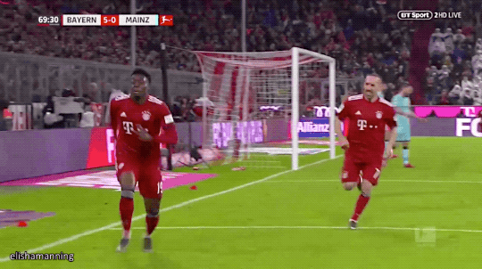
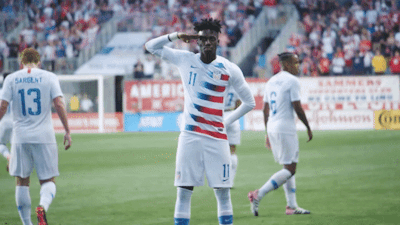
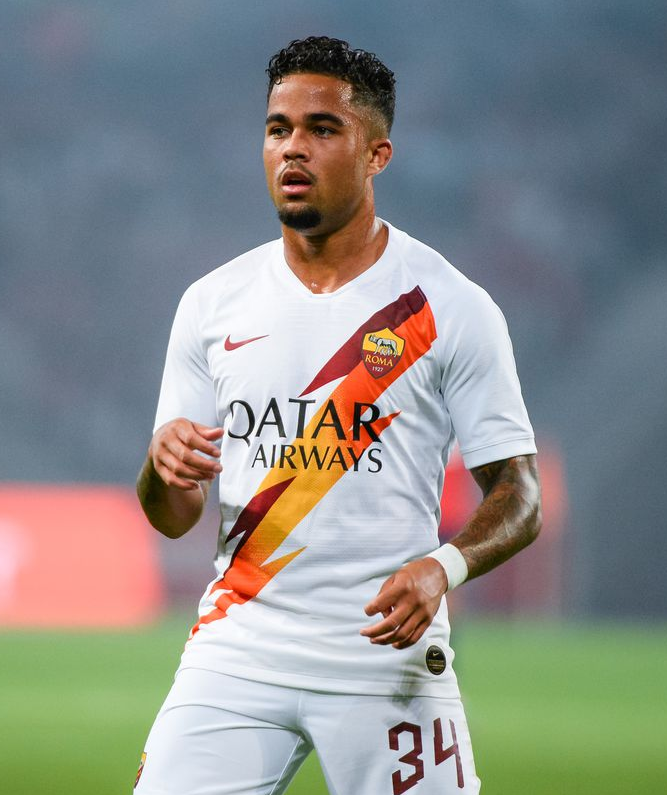
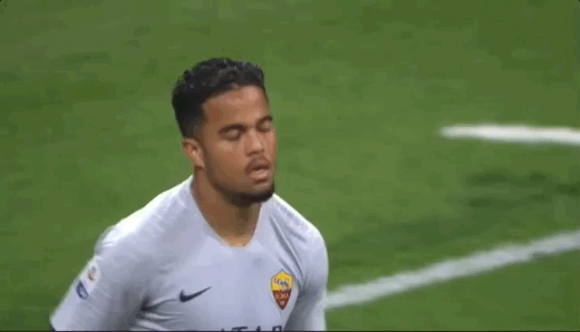
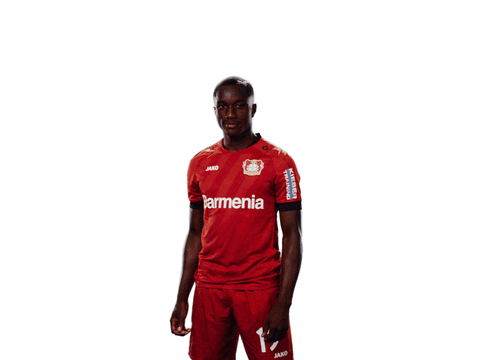
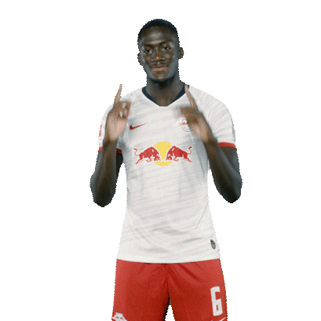
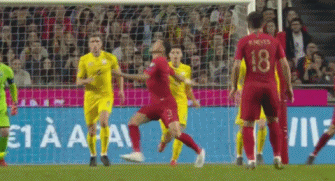
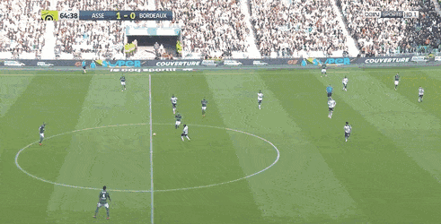

Player's Description

Alphonso Davies-Bayern Munich (18 year old)
Alphonso Boyle Davies (born November 2, 2000) is a Canadian professional soccer player who plays as a winger for Bundesliga club
Bayern Munich and the Canada national team.He was the first player born in the 2000s to play in a Major League Soccer match.
Alphonso Davies: From refugee camp to Bayern Munich.
Physical Attributes
- Height: 181 cm(1m81)
- Weight: 72 kg
- Preferred Foot: Left
- Playable Positions: LM RM
- Primary Position: Left Midfielder(LM)
- Secondary Position: Right Midfielder(RM)
- Work Rate: High/High
- Weak Foot: 4/5
- Skills: 4/5
Game Abilities
- Style of Play
- Likes to dribble
- Likes to use his pace to beat defenders
- Extremely dangerous on the counter thanks to his pace and acceleration
- Gets fouled often
- Strengths
- + Pace
- + Speed on and off the ball
- + Dribbling abilities
- + Young Player
- + Potential to improve alot in the future
- - Strength to physically challenge larger and more experienced defenders
- - Passing
- - Long balls and crosses
- - Physical and mental attributes
Player's Description
Timothy Weah-Lille (19 year old)
Timothy Tarpeh Weah (born February 22, 2000) is an American professional soccer player who plays as a forward for French Ligue 1 club
Lille and the United States national team.In March 2018, he made his senior debut for Paris Saint-Germain and earned his first senior
international cap for the United States.
Physical Attributes
- Height: 185 cm(1m85)
- Weight: 66 kg
- Preferred Foot: Right
- Playable Positions: ST LW
- Primary Position: Striker(ST)
- Secondary Position: Left Winger(LW)
- Work Rate: High/Medium
- Weak Foot: 3/5
- Skills: 3/5
Game Abilities
- Style of Play
- Likes to dribble
- Incredibly unselfish
- Has a pass-first mentality
- Deadly for defenders when debating between pass or dribble
- Strengths
- + Passing ability
- + Technical ability
- + Pace
- + Young Player
- + Potential to improve alot in the futur
- - Poor scoring ability
- - Tend to take the wrong decision
- - Enormous pressure to fill out his father's boots
Player's Description
Justin Kluivert-Roma (20 year old)
Justin Dean Kluivert (born 5 May 1999) is a Dutch professional footballer who plays for A.S. Roma and the Dutch national team.
He primarily features as a left winger.
Physical Attributes
- Height: 171 cm(1m71)
- Weight: 66 kg
- Preferred Foot: Right
- Playable Positions: LW LM
- Primary Position: Left Winger(LW)
- Secondary Position: Left Midfielder(LM)
- Work Rate: High/Medium
- Weak Foot: 4/5
- Skills: 4/5
Game Abilities
- Style of Play
- Likes to dribble
- Able to score and dribble comfortably with both feet
- Attacks the opposition full back directly
- Hugs the touchline when in possession of the ball
- Strengths
- + Dribbling with both feet (Stronger foot is right)
- + Shooting range (Good long shot taker)
- + Technique and Team work
- + Pace and Flair
- Weaknesses
- - Strength
- - Aerial Duels
- - Vision
- - Enormous pressure to fill out his father's boots
Player's Description

Moussa Diaby-Bayer Leverkusen (20 year old)
Moussa Diaby (born 7 July 1999) is a French professional footballer who plays as a winger for Bundesliga club Bayer Leverkusen.
Physical Attributes
- Height: 170 cm(1m70)
- Weight: 65 kg
- Preferred Foot: Left
- Playable Positions: LM CM
- Primary Position: Left Midfielder(LM)
- Secondary Position: Central Midfielder(CM)
- Work Rate: High/Medium
- Weak Foot: 2/5
- Skills: 4/5
Game Abilities
- Style of Play
- Likes to dribble
- likes to play a direct style by running straight at defenders with pace
- Plays with a natural flair and is dangerous in the box
- Does not dive into tackles
- Strengths
- + Pace
- + Acceleration
- + Dribbling
- + Dynamism
- Weaknesses
- - Defensive contribution
- - The quality of his crosses
- - Aerial Duels
- - Finishing
Player's Description

Amadou Haidara-RB Leipzig(21 year old)
Amadou Haidara (born 31 January 1998) is a Malian professional footballer who plays as a midfielder for German club RB Leipzig
and the Mali football team.
Physical Attributes
- Height: 175 cm(1m75)
- Weight: 72 kg
- Preferred Foot: Right
- Playable Positions: CM RM
- Primary Position: Central Midfielder(CM)
- Secondary Position: Right Midfielder(RM)
- Work Rate: Medium/Medium
- Weak Foot: 2/5
- Skills: 4/5
Game Abilities

- Style of Play
- Indirect set-piece threat
- Likes to dribble
- Likes to do layoffs
- Likes to shoot from distance
- Likes to tackle
- Strengths
- + Dribbling
- + Aerial Duels
- + plays the ball smoothly, doesn’t put the receiving player under pressure
- + Skilled at one-touch passing
- + Vision
- Weaknesses
- - Lazy(doesn’t track players back)
- - Pass accuracy are poor because he tries more riskier passes than other
- - Fouls often
- - Attempts risky passes usually in the final 3rd
Player's Description

Ibrahima Konaté-RB Leipzig (20 year old)
Ibrahima Konaté (born 25 May 1999) is a French professional footballer who plays for the German club RB Leipzig as a centre-back.
Physical Attributes
- Height: 194 cm(1m94)
- Weight: 95 kg
- Preferred Foot: Right
- Playable Positions: CB DMC
- Primary Position: Center-Back(CB)
- Secondary Position: Defensive-Midfielder(DMC)
- Work Rate: High/High
- Weak Foot: 2/5
- Skills: 3/5
Game Abilities
- Style of Play
- Ability of winning the ball back
- Ability of quickly breaking the lines to put forwards on the attack in a flash
- Commits fouls often
- Likes to dribble
- Likes to play short passes
- Strengths
- + Aerial duels
- + Concentration
- + Physical attributes
- + Interceptions
- Weaknesses
- - Passing
- - Decision making
- - Miscommunication
- - Set pieces
Player's Description

Max Aarons-Norwich City (20 year old)
Max Aarons. Maximillian James Aarons (born 4 January 2000) is an English footballer who plays for Premier League club Norwich City.
He is primarily a right-back, but can also play as a left-back.
Physical Attributes
- Height: 178 cm(1m78)
- Weight: 73 kg
- Preferred Foot: Right
- Playable Positions: LB RB
- Primary Position: left-Back(LB)
- Secondary Position: Right-Back(RB)
- Work Rate: High/Medium
- Weak Foot: 3/5
- Skills: 3/5
Game Abilities

- Style of Play
- Ability to play RB and LB
- Likes to dribble
- Likes to play short passes
- Does not dive into tackles
- Strengths
- + Dribbling
- + Passing
- + Key passes
- + Holding possession of the ball
- Weaknesses
- - Aerial duels
- - Crosses and centers
- - Long balls
- - Not cautious when moving the ball forward
Player's Description

Achraf Hakimi-Borussia Dortmund (20 year old)
Achraf Hakimi Mouh (Arabic: أشرف حكيمي; born 4 November 1998), sometimes known simply as Achraf, is a professional footballer
who plays for German club Borussia Dortmund,on loan from Real Madrid, and the Morocco national team.Mainly a right-back,
he can also play as a left-back or central defender.
Physical Attributes
- Height: 181 cm(1m81)
- Weight: 73 kg
- Preferred Foot: Right
- Playable Positions: LB RB
- Primary Position: Left-Back(LB)
- Secondary Position: Right-Back(RB)
- Work Rate: High/Low
- Weak Foot: 2/5
- Skills: 3/5
Game Abilities

- Style of Play
- Likes to dribble
- Likes to play short passes
- Possess an aggressive playing style and virtually unmatched stamina
- Tactically, technically adept and capable of playing long accurate passes from defense
- Strengths
- + Passing
- + Dribbling
- + Holding on the ball
- + Stamina
- Weaknesses
- - Defensive commitments
- - One-on-ones
- - Vision
- - Injury Prone
Player's Description

Andriy Lunin-Real Valladolid (20 year old)
Andriy Oleksiyovych Lunin (Ukrainian: Андрій Олексійович Лунін; born 11 February 1999) is a Ukrainian professional footballer
who plays as a goalkeeper for Real Valladolid,on loan from Real Madrid, and the Ukrainian national team.
Physical Attributes
- Height: 192 cm(1m92)
- Weight: 87 kg
- Preferred Foot: Right
- Playable Position: GK
- Primary Position: Goalkeeper(GK)
- Secondary Position: None
- Work Rate: Medium/Medium/
- Weak Foot: 3/5
- Skills: 1/5
Game Abilities
- Style of Play
- Likes to punch the ball
- Ability to stop penalty
- Likes to dive to stop the ball
- Strengths
- + Penalty saving
- + Long passing
- + Saving long shots
- + Strong punch
- + Reflexes
- + Height
- Weaknesses
- - Concentration
- - Distribution skills
- - Positional sense
- - Passing
Player's Description

Jonathan David-K.A.A. Gent(19 year old)
Jonathan Christian David (born January 14, 2000) is a Canadian soccer player who plays for Belgian club K.A.A. Gent in the Belgian
First Division A and the Canada national team.
Physical Attributes
- Height: 177 cm(1m77)
- Weight:77 kg
- Preferred Foot: Right
- Playable Positions: CF ST AM
- Primary Positions: Striker(CF ST)
- Secondary Position: Attacking Midfielder(AM)
- Work Rate: High/Medium
- Weak Foot: 5/5
- Skills: 3/5
Game Abilities

- Style of Play
- Likes to dribble
- Ability to be in the right place at the right time
- Knows what to do in the final third
- Unpredictable
- Strengths
- + Pace
- + Acceleration
- + Dribbling
- + Stamina
- + Agility
- Weaknesses
- - Defensive role
- - Defense Prowess
- - Ball Winning
Player's Description

William Saliba-AS Saint-Étienne (18 year old)
William Alain André Gabriel Saliba (born 24 March 2001) is a French professional footballer who plays as a defender for Ligue 1
club AS Saint-Étienne on loan from Premier League club Arsenal.
Physical Attributes
- Height: 192 cm(1m92)
- Weight: 85 kg
- Preferred Foot: Right
- Playable Positions: CB RB
- Primary Position: Center-Back(CB)
- Secondary Position: Right-Back(RB)
- Work Rate: Medium/High
- Weak Foot: 3/5
- Skills: 2/5
Game Abilities
- Style of Play
- Likes to stamp his authority with his physicality and aerial ability
- Posess a rapid turn of pace
- Very strong in the air and quick across the ground
- Developed a good understanding of the game
- Strengths
- + Tackling
- + Concentration
- + Ball interception
- + Blocking the ball
- Weaknesses
- - Aerial duels
- - Tend to keep the ball in defence
- - ability to utilize his body and strength